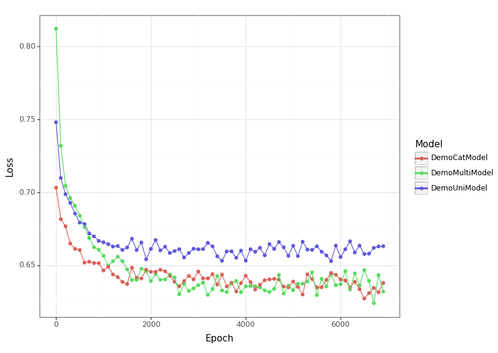

AANN 08/02/2024
Gated multimodal units
In this example we will use the gated multimodal units (GMU) as proposed by Arevalo et al (2017) to solve a classification problem on a synthetic dataset. The GMU provides a way to combine data from multiple sources (provided they can be mapped into a shared space). Since this is about the new type of unit (defined here), we will use the basic simulation example (defined here) from the paper rather than trying to replicate the full movie genre classification task.
Synthetic data
The task we consider in the simulation study is simple binary classification, where we have a pair of univariate predictors in each sample, and we want to predict a binary class value. In each observation, only one of the predictors is informative of the class and the other is pure noise drawn from another distribution1.
- \(C\sim\text{Bernoulli}(p_C)\) for the class
- \(M\sim\text{Bernoulli}(p_M)\) for which modality is informative
- Then for modality \(i\) where \(i=a\) or \(b\) we have
- \(y_i\sim\text{Normal}(\gamma_i^C)\) the informative predictor
- \(\tilde{y}_i\sim\text{Normal}(\tilde{\gamma}_i)\) noise
- \(x_a = M y_a + (1 - M) \tilde{y}_a\) and \(x_b = (1 - M) y_b + M \tilde{y}_b\).
So, we have a binary class label \(C\) and we want to predict if it is \(0\) or \(1\) based on a pair of noisy observations \(x_a\) and \(x_b\). The random variable \(M\) determines which of \(x_a\) and \(x_b\) is informative of \(C\) (the other is pure noise).
The GMU can handle the more general case where both variables are informative, but this is the example from the paper so we will stick with that to keep things simple.
Loading packages
First we need to load packages and set the seed for our random number
generator. The current_directory is used to make it easier to load
some simple helper code and can be ignored.
import time import sys import os from pathlib import Path from typing import Tuple import inspect import torch import torch.nn as nn import torch.optim as optim from torch.distributions import normal, bernoulli import pandas as pd import plotnine as p9 current_directory = Path(os.getcwd()) sys.path.append(str(current_directory.parent)) import niceneuron.plot as nn_plot torch.manual_seed(0)
We import the inspect module here because it provides a clean way to
check the signature of methods. This is helpful later on for writing a
generic training loop below. You can pretty safely ignore this as well
though.
Define data generating process
We can implement the model above with some values for the \(p_C\), \(p_M\) and \(\gamma\) as
- \(p_C=0.5\)
- \(p_M=0.5\)
- \(\gamma^{0}_a=1.0\), \(\gamma^{1}_a=2.0\), \(\tilde{\gamma}_a=3\)
- \(\gamma^{0}_b=2.0\), \(\gamma^{1}_b=3.0\), \(\tilde{\gamma}_b=1\)
The following snippet implements the data generating process described above.
def rand_dataset( num_samples: int ) -> Tuple[torch.Tensor, torch.Tensor, torch.Tensor]: class_labels = (bernoulli .Bernoulli(probs=0.5) .sample((num_samples,))) modal_labels = (bernoulli .Bernoulli(probs=0.5) .sample((num_samples,))) l_0 = (normal .Normal(loc=torch.where(class_labels == 0, torch.Tensor([1]), torch.Tensor([2])), scale=torch.Tensor([1])) .sample(sample_shape=torch.Size([1]))) l_0_noise = normal.Normal(loc=3, scale=1).sample((num_samples,)) x_0 = torch.where(modal_labels == 0, l_0, l_0_noise).squeeze(0) l_1 = (normal .Normal(loc=torch.where(class_labels == 1, torch.Tensor([3]), torch.Tensor([2])), scale=1) .sample(sample_shape=torch.Size([1]))) l_1_noise = normal.Normal(loc=1, scale=1).sample((num_samples,)) x_1 = torch.where(modal_labels == 1, l_1, l_1_noise).squeeze(0) return (class_labels.to(torch.long), x_0.unsqueeze(1), x_1.unsqueeze(1))
Define the input and output filenames
num_samples = 5000 num_epochs = 7000 loss_png = "loss.png" loss_csv = "loss.csv"
Define the gated multimodal unit
Here is GMU in its binary form as described by Arevalo et al (2017). The GMU has hidden values
\[ h_i = \tanh(W_i \cdot x_i) \]
for \(i=a\) and \(b\), a weighting vector
\[ z = \sigma(W_z \cdot [x_a, x_b]), \]
and outputs
\[ h = z * h_a + (1 - z) * h_b. \]
The parameters of this unit are \(\Theta = \{W_a, W_b, W_z\}\).
And as a PyTorch Module, this is
class BinaryGMU(nn.Module): def __init__(self, input_dim:int, output_dim:int): super(BinaryGMU, self).__init__() self.input_dim = input_dim self.output_dim = output_dim self._W_a = nn.Linear(self.input_dim, self.output_dim) self._W_b = nn.Linear(self.input_dim, self.output_dim) self._W_z = nn.Linear(self.output_dim + self.output_dim, self.output_dim) def forward(self, x_a, x_b): h_a = torch.tanh(self._W_a(x_a)) h_b = torch.tanh(self._W_b(x_b)) z = torch.sigmoid(self._W_z(torch.cat((h_a, h_b), dim=1))) return z * h_a + (1 - z) * h_b
Note that we have assume that \(x_a\) and \(x_b\) have the same dimensionality, but this is not necessary.
Define the network architectures used in the prediction
We will consider a couple of different network architectures to demonstrate the use of the GMU.
Define a univariate model
class DemoUniModel(nn.Module): def __init__(self): super(DemoUniModel, self).__init__() self._uni = nn.Sequential( nn.Linear(1, 1), nn.Tanh(), nn.Linear(1, 2) ) def forward(self, x): logits = self._uni(x) return logits
Define a model that just concatenates the modalities
class DemoCatModel(nn.Module): def __init__(self): super(DemoCatModel, self).__init__() self._cat = nn.Sequential( nn.Linear(2, 2), nn.Tanh(), nn.Linear(2, 2) ) def forward(self, x_a, x_b): logits = self._cat(torch.cat((x_a, x_b), dim=1)) return logits
Define a model that combines the modalities with a GMU
class DemoMultiModel(nn.Module): def __init__(self): super(DemoMultiModel, self).__init__() self._gmu = BinaryGMU(input_dim=1, output_dim=2) self._W = nn.Linear(2, 2) def forward(self, x_a, x_b): logits = self._W(self._gmu(x_a, x_b)) return logits
Instantiate the models
model_uni = DemoUniModel() model_cat = DemoCatModel() model_multi = DemoMultiModel()
Prepare for training
To avoid writing three training loops, we write a generic one that takes a model instance. Since this is less about the training than the network structure; you should feel free to skip this.
loss_fn = nn.CrossEntropyLoss() def run_training_loop(model): num_args = len(inspect.signature(model.forward).parameters) optimizer = optim.Adam(model.parameters(), lr=1e-3) model.train() loss_history = [] for epoch in range(num_epochs): class_labels, x_0, x_1 = rand_dataset(num_samples) if num_args == 2: logits = model(x_0, x_1) elif num_args == 1: logits = model(x_0) else: raise ValueError("Model must have 1 or 2 arguments") loss = loss_fn(logits, class_labels) optimizer.zero_grad() loss.backward() optimizer.step() if epoch % 100 == 0: loss_history.append((epoch, loss.item(), model.__class__.__name__)) print(f"Epoch {epoch} loss: {loss.item()}") return loss_history, model
Run the training loop
loss_history_uni, model_uni = run_training_loop(model_uni) loss_history_cat, model_cat = run_training_loop(model_cat) loss_history_multi, model_multi = run_training_loop(model_multi) loss_uni_df = pd.DataFrame(loss_history_uni, columns=['epoch', 'loss', 'model']) loss_cat_df = pd.DataFrame(loss_history_cat, columns=['epoch', 'loss', 'model']) loss_multi_df = pd.DataFrame(loss_history_multi, columns=['epoch', 'loss', 'model']) loss_df = pd.concat([loss_multi_df, loss_uni_df, loss_cat_df]) loss_df.to_csv(loss_csv, index=False)
Visualise the training results
Figure 1 shows the training curves for each of the models considered. Obviously, this isn't as convincing as a separate validation set, but it seems reasonable based on this to think that the multimodal models are preforming on par with each other and that both are doing better than the unimodal one2.

loss_df = pd.read_csv(loss_csv) loss_p9 = nn_plot.plot_loss_curve(loss_df) loss_p9.save(loss_png, height = 5.8, width = 8.2)
Discussion
Gated multimodal units provide a clean way to combine data from multiple sources provided they can be mapped into a shared space. In this simulation study, the GMU-based model is comparable to concatenation, but for such a simple task that is not wildly surprising. Part of the motivation for the GMU is that it will keep the number of parameters smaller at higher dimensions, so I am not surprised there are not substantial benefits in this small example. Not surprisingly, the multimodal models do better than the univariate one.
Thanks
Thanks to Jackson Kwok for helpful comments on a draft of this.
Footnotes:
This is perhaps a more artificial example than is ideal, but it is what they presented in the paper and it does provide an example of modes having different amounts of information.
I have been warned that making these sort of assumptions is fraught with danger, but since the main point of interest is the GMU architecture I'll be bold.